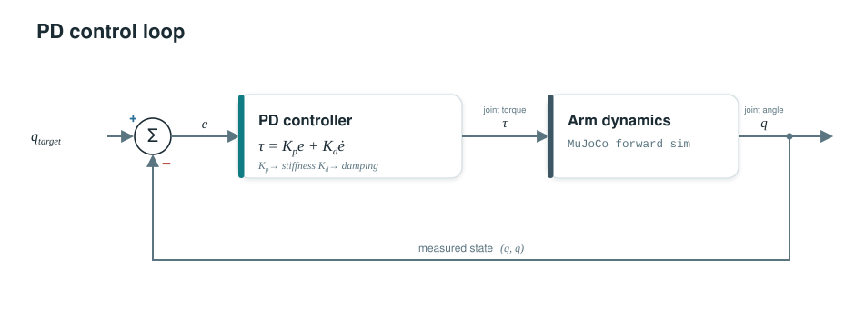
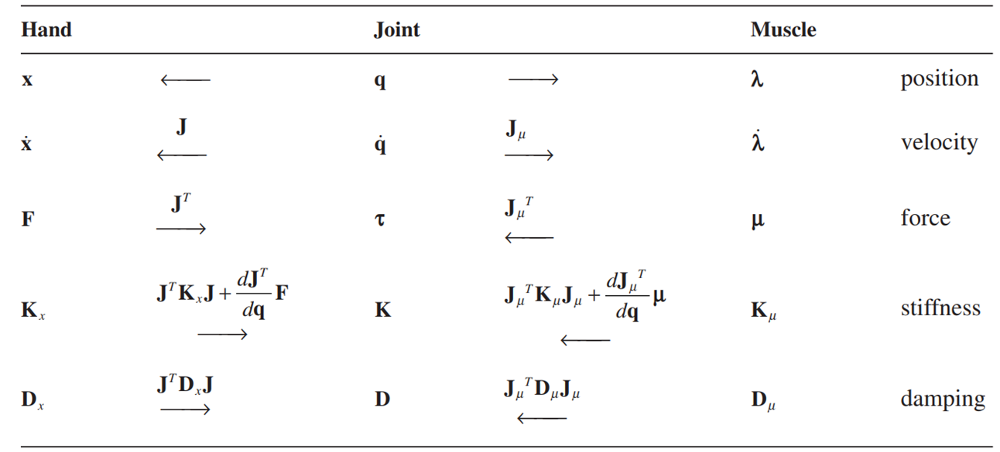
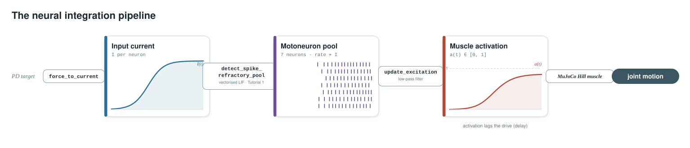
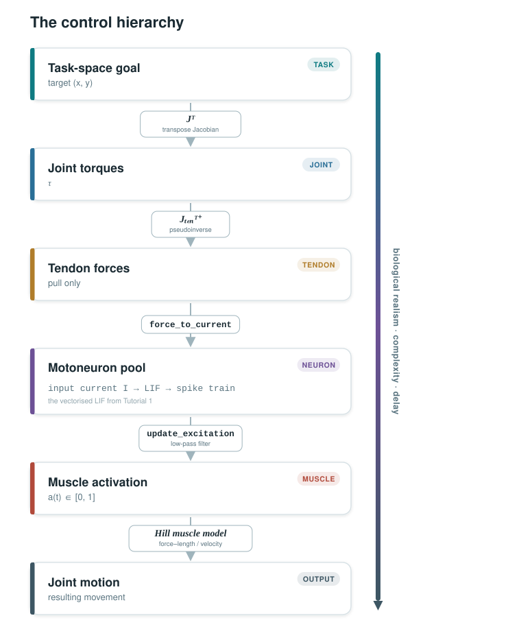

Tutorial 2: Controlling a Musculoskeletal Arm#
Workshop Day 2 — From PD control to a neural-driven musculoskeletal model
Why this tutorial?#
In the previous tutorial, you built a single LIF neuron and scaled it to a pool that produces muscle excitation. Now, we close the loop: those excitation signals will drive muscles attached to a MuJoCo arm, and a PD controller will tell the neurons what to do.
We walk through five scripts, each one closer to biology:
# |
Script |
What controls the arm |
What you learn |
|---|---|---|---|
1 |
Joint torques |
PD control basics |
|
2 |
Task-space forces via Jacobian |
Coordinate transforms |
|
3 |
Tendon forces |
Redundancy, pulling-only |
|
4 |
Muscle activations |
Hill-type muscle model |
|
5 |
Motoneuron pool |
Full neural–musculoskeletal loop |
Section 1: PD control in joint space#
The idea#
The simplest way to move a robot arm: apply a torque at each joint proportional to the position error and the velocity error:
where \(\mathbf{e} = \mathbf{q}_{\text{target}} - \mathbf{q}\) is the joint-angle error and \(\dot{\mathbf{e}} = -\dot{\mathbf{q}}\).

\(K_p\) too low → arm doesn’t reach
\(K_p\) too high → oscillations
\(K_d\) adds damping
See also: detailed notes
Section 2: PD control in task space#
The problem#
We usually care about where the fingertip is, not joint angles. How do we convert a desired fingertip position into joint torques?

The Jacobian#
The Jacobian \(\mathbf{J}\) maps joint velocities to end-effector velocities:
It depends on the current arm configuration, so we recompute it every timestep. To convert a task-space force into joint torques:
The PD controller now operates on errors in Cartesian (x, y) coordinates:
See also: detailed notes
Section 3: From joints to tendons#
The problem#
Real joints aren’t driven by torque motors, they are pulled by tendons. A tendon can only pull, never push. We need at least two tendons per joint (agonist / antagonist).
The tendon Jacobian#
The tendon Jacobian \(\mathbf{J}_{\text{ten}}\) maps joint velocities to tendon velocities. To go from desired joint torques to tendon forces:
The \(^+\) is the pseudoinverse, because there are more tendons than joints (the system is redundant).
See also: detailed notes
Section 4: Muscle model#
From ideal tendons to muscles#
Real muscles are not ideal force generators. MuJoCo provides a Hill-type muscle model with:
Force–length relationship — muscles have an optimal length
Force–velocity relationship — less force when contracting fast
Activation dynamics — force lags behind the neural command
The control input is now activation \(a \in [0, 1]\), not force.
See also: detailed notes
Section 5: Closing the loop with motoneurons#
The full pipeline#
This is where Tutorial 1 meets Tutorial 2. Instead of sending activation values directly to muscles, we route the signal through a LIF neuron pool:

See also: detailed notes
Summary: the control hierarchy#
Each level adds biological realism but also complexity and delay. Understanding how the brain manages this cascade in real time is the central challenge in motor neuroscience.
